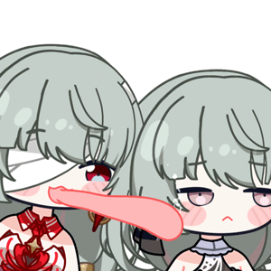

飞行雪绒
鸣潮助手 & 群聊伴侣
📢 公告
这里是 WuwaFrontEnd 的模板预览页。
这里是 bot 介绍页的主页，可以用这个模板为你的 bot 进行介绍，以招徕顾客。
XutheringWavesUID 的登录模板页 和 云游戏登录获取抽卡链接的模板页，
请点击以下按钮跳转预览:
XwUID 登录模板 云游戏登录模板
🌿 关于飞行雪绒
飞行雪绒是一款专为《鸣潮》玩家打造的综合功能机器人。核心查询能力基于 XutheringWavesUID 库与 GSUID Core 框架，提供声骸数据查询、角色面板评分与图片生成。
🛡️ 服务条例
- 完全免费，严禁任何形式的倒卖。
- 请规范使用 AI 功能，避免触发风控。
- 恶意刷屏或辱骂机器人将导致自动拉黑。
- 因库街区接口变动导致无法查询，我也没办法鸭。
✨ 核心功能
鸣潮查询
指令 ww面板, ww签到。支持数据集成与自动签到。
声骸评分
发送声骸截图或使用 ww评分 指令，快速评估声骸强度。
Maimai 智能体
深度整合 LLM，支持上下文对话，拥有独立记忆系统。
表情包生成
直接发送 摸、菲比说 等指令，一键生成趣味搞怪表情包。
每日运势
发送 今日运势、运势，获取你的专属好运指导。
娶群友
发送 娶群友、wife ，获取你的专属老婆。
📱 如何添加
QQ 官机
在机器人管理页面搜索 "飞行雪绒" 即可添加。私聊与群聊均可使用。
扫码添加

👥 群聊准入要求
为保证稳定性，申请入群需满足以下条件：
群活跃人数小于 1 人
无其他冲突类鸣潮机器人
群主/管理知晓并规范使用